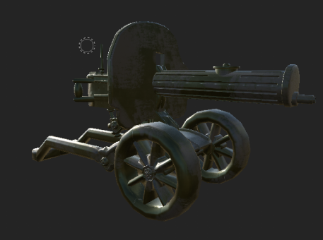
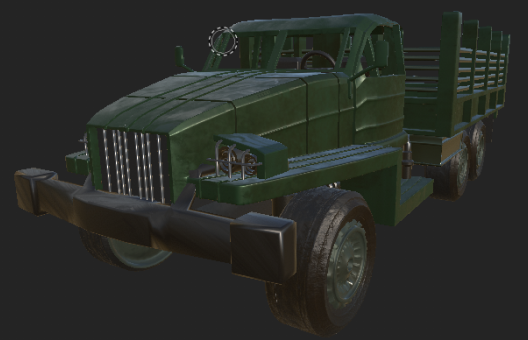
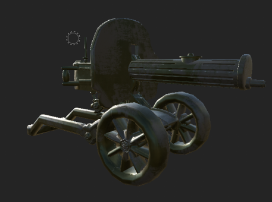
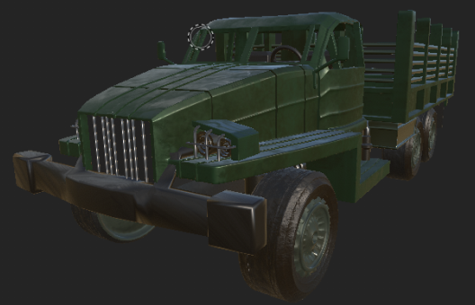

표적집단심층면접(FGI)
6.25전쟁이 언제 일어났나요?
10대(7명)중 1명 만이 6ㆍ25 전쟁이 ‘1950년에 일어났다’고 정확하게 응답
19~79세의 64.3%가 ‘1950년’이라고 정확하게 알고 있던 점과 비교하면 상대적으로 낮은 수준이였습니다.
학도(學徒):장사상륙작전
잊혀져서는 안 될
역사적 사건을 소개합니다.
표적집단심층면접(FGI)
6.25전쟁이 언제 일어났나요?
10대(7명)중 1명 만이 6ㆍ25 전쟁이 ‘1950년에 일어났다’고 정확하게 응답
19~79세의 64.3%가 ‘1950년’이라고 정확하게 알고 있던 점과 비교하면 상대적으로 낮은 수준이였습니다.
학도병들이 참전한
장사상륙작전 VR콘텐츠
이와 같은 문제점을 해결하기 위해 현대 학생과 나이대가 같은 학도병들의 이야기를 나누고자합니다.
학도병
구성된 학도의용군
전투,후방지원,정규군대일원으로
다양한 업무와 직군에서 활약하여 조국 수호에 헌신
장사상륙작전
9월 14일, 인천상륙작전에 하루 앞서 펼친 양동작전
772명의 학도병으로
희생139명,부상자 92명,적 사살 270명,애국청년 구출 10명
SCENARIO
플레이어는 학도의용군으로 입대하여 기본 훈련(튜토리얼)을 받습니다.
훈련을 마친 후, 장사상륙작전에 참여하게 됩니다. 배를 타고 장사리에 상륙한 플레이어는 200고지를 성공적으로
탈환하며, 북한군의 진입로를 차단하기 위한 폭탄 설치 작업을 수행합니다.설치 완료 후, 북한군의 공격이 시작되며
생존을 위한 전투가 벌어집니다. 구조선이 도착하여 탑승해야 하지만, 북한군의 집중 사격으로 인해 구조선에
도달하는 것은 어렵습니다.모든 동료들이 구조선에 올라타지 못하였으며, 이들 중 일부는 남아있다가 전사합니다.
플레이어는 이러한 현장을 목격하며 체험을 마무리합니다.
CHARACTER MODELING
현실감 있는 느낌을 위해 실사느낌으로 제작
캐릭터
- 학도병
(캐릭터, 교복, 장구류, 군화(유료모델링 사용))
- 남한군
(캐릭터, 군복(컴벳셔츠 모델링 찾아본 후 결정)), 장구류, 군화(유료모델링 사용)
- 북한군
(캐릭터, 군복, 장구류, 군화(유료모델링 사용))
PROP MODEL MODELING
배,총기류,포격기,무전기 등 실제 사진과 동일한 모델링
 



BACKGROUND MODELING
폭격이 일어난 후 망가진 자연환경과 황무지가 된 배경으로,
실제 장사리 사진을 참고하여 모델을 하였습니다.
TEXTURING
바다
200고지
터널
조이스틱 조작법 숙련을
위한 훈련 시작
사용자는 콘텐츠 조작법을 익힐수 있습니다.